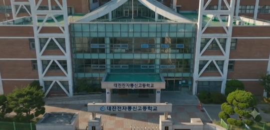

부산 금정구 장전동 소재 대진전자통신고등학교의 첨단 실습 환경(전자과·AI소프트웨어과·스마트콘텐츠과·산업디자인과)과 활기찬 학창시절을 담은 1분 분량의 8개 씬 스토리보드 기획서입니다.
Style: bright, warm, cinematic Korean high school promotional video, natural daylight, soft golden-hour highlights mixed with clean daytime shots, shallow depth of field, handheld-but-stable camera movement, vibrant but realistic color grading (slightly warm, high contrast, teal-orange undertone), 4K photorealistic, no text overlays baked into video (text will be added in post), diverse group of Korean high school students (교복 착용, 남녀공학) and teachers, energetic but natural performances, no exaggerated slow motion except where noted, subtle background score cues (upbeat, inspiring, light electronic-orchestral hybrid) noted per scene.
타임라인 슬라이더나 씬 버튼, 이미지를 클릭하여 Quick Look 비디오를 확인하세요.

부산 장전역 인근 도심 속 '大'자 형태 건물과 정문 신입생들을 부드럽게 조망하며 상승/하강하는 상쾌한 오프닝.
사진을 클릭하면 해당 씬의 비디오 영상(01.mp4 ~ 08.mp4)을 Finder 미리보기 창으로 확인할 수 있습니다.
부산 장전역 인근 도심 속 '大'자 형상의 대진전자통신고 캠퍼스 건물로 드론이 서서히 하강하며, 등교하는 학생들과 학교 정문 명판을 조망합니다.
Aerial drone shot slowly descending toward a modern Korean high school campus building whose footprint is laid out in the shape of the Chinese character "大" (large, symmetric cross-like wings), located in a dense urban neighborhood near a subway station entrance in Busan, South Korea. Morning sunlight, clear blue sky, a few clouds. Camera glides forward over the rooftop and glass facade, revealing the school's front gate with a sign reading "대진전자통신고등학교" in Korean. Students in school uniforms walking toward the entrance in small groups, chatting and laughing. Subtle lens flare from the sun. Audio: uplifting orchestral-electronic music swell begins, ambient city and bird sounds fade in.
교복 차림의 남녀 학생들이 미소를 지으며 활기차게 교문을 지나 캠퍼스로 들어서는 아침 등교 풍경 트래킹 샷.
Ground-level tracking shot at the school main entrance gate. A group of Korean high school students in school uniforms walk together past the building entrance, smiling and chatting naturally. Warm morning daylight, soft shadows, steady walking camera motion. Audio: light footsteps, cheerful student chatter, uplifting music building.
채광이 풍부한 원목 바닥의 실내 체육관에서 학생들이 농구를 하며 활기찬 에너지와 협동심을 발휘합니다.
Interior wide shot of a bright, modern school gymnasium (체육관) with polished wood flooring, basketball hoops, and large windows letting in natural light. A small group of students in gym uniforms are playing basketball and cheering, full of energy. Camera does a slow dolly-in from the entrance doors toward center court, capturing motion blur on a bouncing ball. Audio: sneakers squeaking, ball bouncing, students cheering, music tempo picks up.
전자과 첨단 실습실에서 진지한 태도로 전자회로 부품을 납땜 조립하며 집중하는 학생들과 교사의 열정적인 지도 모습.
Interior shot of a modern software laboratory classroom. Rows of students working at computers with lines of code and AI/software development tools visible on dual monitors. Teacher guiding a student, pointing at a screen. Clean, bright high-tech classroom. Camera does a smooth slow pan left to right across the room. Audio: soft electronic music, ambient typing sounds, quiet focused chatter.
VR 헤드셋을 착용하고 메타버스 및 게임 3D 요소/드론 기체를 조립·시연하는 차세대 미래형 스마트콘텐츠 제작실.
Interior shot inside a specialized smart content studio. One student wears a VR headset with controllers, gesturing while an animated 3D scene appears reflected on a nearby large monitor. Beside them, another group of students test a small quadcopter drone on a workbench. Bright studio lighting, tech-forward decor. Camera glides in an arc shot around the VR student. Audio: light futuristic synth music, soft drone motor test sound.
햇살 가득한 스튜디오에서 태블릿 스케치와 3D 프린팅 시제품을 비교 검토하며 아이디어를 완성해 나가는 산업디자인과 창작 공간.
Interior shot of an industrial design studio filled with natural light from large windows. Students sketch product concepts on tablets and paper, 3D-printed prototypes and design models displayed on shelves nearby. A student proudly holds up a 3D-printed prototype to show a classmate, both smiling. Warm light streaming across worktables. Camera does a slow push-in. Audio: music softens slightly, warm acoustic undertone, studio chatter.
야외 벤치담소, '大'자 건물 전경을 아우르며 소중한 친구들과의 추억과 학교의 활기찬 에너지를 표현하는 몽타주.
Quick montage of outdoor campus life: students chatting on an outdoor bench near the school building, a rooftop view showing the school's distinctive angular building layout in daylight, and a shot of students high-fiving after a school event. Warm late-afternoon golden light. Camera uses short dynamic cuts (1.5-2 seconds each) with smooth handheld motion. Audio: music builds toward a triumphant peak, claps and laughter.
대진전자통신고 본관 정문 앞에서 학생들과 선생님들이 밝게 웃으며 카메라를 향해 손을 흔들고, 카메라가 상승/후퇴하며 메인 타이틀 로고 영역을 확보합니다.
Wide shot of a large group of Korean high school students and teachers standing together in front of the school main entrance building, smiling warmly and waving at the camera. Golden hour sunlight overhead, clean cinematic framing with space above for logo text, high school promotional video ending shot. Audio: music reaches a warm, resolving final chord.
Veo 3 AI 영상 생성 후 편집 소프트웨어(Premiere, DaVinci 등)에서 보완할 텍스트 자막 가이드입니다.
스토리보드 8개 씬 기획 및 Google Veo 3 AI 비디오 생성 결과물을 종합하여 완성된 풀버전 메인 홍보영상입니다.